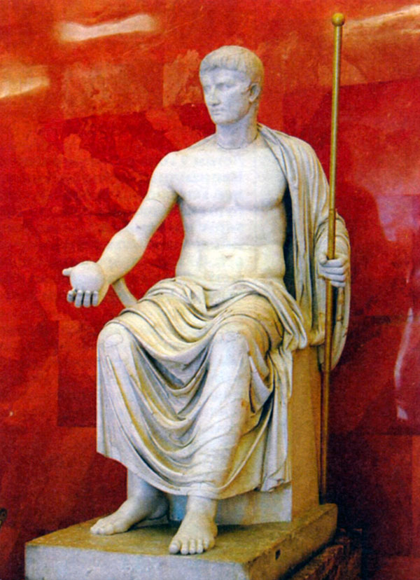

Принципат (30 или 27 до н. э. — 193 н. э.).
Государственный строй установившийся в Риме при Октавиане Августе получил название принципата. Его характерной чертой было сохранение внешнего «фасада» республики: сената, магистратур и т.д. при фактически монархическом образе правления. Власть сосредоточивалась в руках императоров - принцепсов сената, которые кроме того, имели высшую военную власть — империй, пожизненную трибунскую власть, т.е. право налагать вето на любое решение сената, цензорскую т.е. право исключения членов сената, звание верхнего жреца. Официальным титулами были почетные имена - "Цезарь" и "Август". Под личным контролем императоров находилось большинство провинции, казна (фиск), и постоянно растущий бюрократический аппарат.
Сенат формально оставался высшим органом государственного управления, однако фактически его власть была ограничена. При императорах династии Юлиев-Клавдиев (27 до н. э. — 68 н. э.) принципы взаимоотношения императоров и сената в значительной степени зависели от личности правителя. Так, при Октавиане Августе (27 до н.э. – 14 гг. н.э.) и Клавдии (41 – 54 гг.) императоры, стремившиеся не допустить роста оппозиционных настроений среди сенаторской аристократии, поддерживали видимость сенаторских привилегий. При императорах Тиберии (14 – 37 гг.), Калигуле (37 – 41 гг.) и Нероне (54 – 68 гг.), власть которых принимала деспотический характер сенаторы подвергались репрессиям. Это в свою очередь вызывало выступления и заговоры сенаторской аристократии, направленные против отдельных императоров и императорской власти, в целом.
На I – II в. приходится стремительный рост экономики провинций. При Октавиане Августе был ограничен произвол откупщиков и римских чиновников, над деятельностью которых был организован под строгий государственный контроль. Провинции перестают быть исключительно объектом поборов Рима и становятся органичными частями государства. Как говорил наследник Августа – император Тиберий: «добрый пастырь стрижёт овец, но не сдирает с них кожу».
Внешняя политика императоров I - II вв. охарактеризовалась продолжением экспансии Рима. При Юлиях-Клавдиях к территории римской державы были присоединены Фракия, Паннония, Далмация, Реция, Норик, Мавретания, южная часть Британии, окончательно утратили автономию мелкие эллинистические государства. Во II в. империя достигла своего наибольшего территориального расширения. В ходе победоносных войн императора Траяна к империи были присоединены Дакия, Аравия, Армения и Месопотамия. Однако уже наследник Траяна – Адриан, понимая неспособность удержать все завоевания предшественника, отказался от новых завоевания (при нем римляне оставили Месопотамию и Армению) и перешел к укреплению существующих границ. При нем на рубежах империи была организована система укреплений – лимес.